Basisvaardigheden
Formules Omschrijven
Formules omschrijven is een belangrijke vaardigheid om te hebben. Ook bij vakken zoals natuurkunde komt het heel erg goed van pas. Laten we naar een voorbeeld kijken om te zien hoe dit moet.
Stel je hebt deze formule:
en we willen erachter komen wat \(B\) op zichzelf is, zoals \(B = \ ...\) . Hoe doen we dat? We moeten aan beide kanten van het '\(=\)'-teken hetzelfde doen. In dit geval vermenigvuldigen we beide kanten met \(C\). Dat zorgt ervoor dat de \(C\) aan de rechterkant verdwijnt en aan de linkerkant verschijnt:
Als je dit nog een beetje abstract vindt, probeer het dan eens met getallen in plaats van letters. Bijvoorbeeld:
Nu kun je makkelijker te zien hoe we dit moeten omschrijven. Als we de \(6\) vrij willen maken, dan moeten we de \(2\) naar de andere kant halen. We krijgen dan:
Dit is eigenlijk dezelfde stap als dat we ook hebben gedaan met de letters.
Laten we nu proberen \(C\) vrij te maken zodat we krijgen \(C = \ ...\) . We gaan door met:
Nu kunnen we beide kanten delen door \(A\), en dan krijgen we:
Als we dit controleren met ons getallen voorbeeld, waar \(2 = \frac{6}{3}\), klopt het!
Vergelijkingen Omschrijven
Vergelijkingen omschrijven is eigenlijk hetzelfde als een formule omschrijven. In beide gevallen doe je aan beide kanten van het '\(=\)'-teken hetzelfde. Hierdoor kunnen we de vorm van de formule of vergelijking veranderen. Laten we kijken naar een paar voorbeelden van vergelijkingen:
Voorbeeld 1
De meesten zullen in een keer zien dat dit betekent dat \(x = 2\). Maar laten we het wiskundig bekijken. We delen beide kanten door \(2\) en vinden dan inderdaad:
Voorbeeld 2
Om dit op te lossen willen we alle termen met \(x\) links houden en alle getallen naar rechts doen. We trekken dus \(17\) af aan beide kanten van het '\(=\)'-teken en krijgen dan:
Nu delen we beide kanten door \(35\) en vinden:
Voorbeeld 3
Dit lijkt ingewikkelder, maar het stappenplan is precies hetzelfde. We doen alle termen met \(x\) aan de linkerkant, en de getallen aan de rechterkant. Stap voor stap krijgen we dus:
- \(+\frac{1}{12}\) aan beide kanten geeft:
- \(+\frac{1}{3}x\) aan beide kanten geeft:
- Nu tellen we deze twee breuken bij elkaar op (zie eventueel de Regels bij Breuken om te zien hoe dit moet):
- Deel ten slotte beide kanten door \(\frac{5}{6}\) om te vinden:
Breuken
Breuken worden vaak gebruikt in de wiskunde. Het is daarom belangrijk om goed te leren rekenen met deze breuken. Daarom staan de belangrijkste regels en hoe je met breuken moet rekenen hier op een rijtje.
Begrippen 'teller' en 'noemer'
Bij breuken gebruiken we vaak de termen "teller" en "noemer". De teller is het getal boven de deelstreep en de noemer is het getal onder de deelstreep. Dus in de volgende breuk:
is \(a\) de teller en \(b\) de noemer.
Voor breuken gelden er de volgende regels:
Belangrijk
Regels bij Breuken
-
\[\large{\frac{a}{b} + \frac{c}{b} = \frac{a + c}{b}}\]
-
\[\large{\frac{a}{b} - \frac{c}{b} = \frac{a - c}{b}}\]
-
\[\large{\frac{a}{b} + \frac{c}{d} = \frac{a \cdot d + b \cdot c}{b \cdot d}}\]
-
\[\large{\frac{a}{b} - \frac{c}{d} = \frac{a \cdot d - b \cdot c}{b \cdot d}}\]
-
\[\large{\frac{a}{b} \cdot \frac{c}{d} = \frac{a \cdot c}{b \cdot d}}\]
-
\[\large{\frac{\frac{a}{b}}{\frac{c}{d}} = \frac{a}{b} \cdot \frac{d}{c} = \frac{a \cdot d}{b \cdot c}}\]
Vaak ziet dit er nog lastig uit, dus kijk naar het voorbeeld hieronder om de regels met getallen te zien.
Getallen Voorbeeld Breuken
Getallen Voorbeeld Breuken
-
\[\large{\frac{2}{6} + \frac{1}{6} = \frac{2 + 1}{6} = \frac{3}{6} = \frac{1}{2}}\]
-
\[\large{\frac{2}{6} - \frac{1}{6} = \frac{2 - 1}{6} = \frac{1}{6}}\]
-
\[\large{\frac{1}{2} + \frac{1}{3} = \frac{1 \cdot 3 + 2 \cdot 1}{2 \cdot 3} = \frac{5}{6}}\]
-
\[\large{\frac{1}{2} - \frac{1}{3} = \frac{1 \cdot 3 - 2 \cdot 1}{2 \cdot 3} = \frac{1}{6}}\]
-
\[\large{\frac{3}{4} \cdot \frac{2}{6} = \frac{3 \cdot 2}{4 \cdot 6} = \frac{6}{24} = \frac{1}{4}}\]
-
\[\large{\frac{\frac{1}{2}}{\frac{1}{4}} = \frac{1}{2} \cdot \frac{4}{1} = \frac{4}{2} = 2}\]
We zien dus dat bij optellen en aftrekken van breuken we eerst gelijke noemers moeten hebben. We kunnen dan gewoon de tellers bij elkaar op tellen of aftrekken (regel \(1\) en \(2\)). Als we geen gelijke noemers hebben, moeten we regel \(3\) en \(4\) gebruiken om de noemers toch gelijk te maken. Maar waar komen regel \(3\) en \(4\) vandaan? Het bewijs hieronder laat dat zien.
Waar komen regel 3 en 4 vandaan?
Voor regel \(3\) hebben we een bewijs. We beginnen met beide termen keer 1 te doen:
We weten dat een getal gedeeld door zichzelf altijd gelijk is aan 1, dus we kunnen 1 op deze manier schrijven:
Met regel \(5\) kunnen we dit herschrijven tot:
Omdat de volgorde bij vermenigvuldigen niet uitmaakt, kunnen we dit ook schrijven als:
Nu zien we dat de noemers gelijk zijn en we de twee tellers gewoon bij elkaar kunnen optellen volgens regel \(1\):
Voor aftrekken geldt precies dezelfde stappen, maar dan moet je het plus-teken vervangen met een min-teken.
Operaties met variabelen
Een operatie klinkt als een lastig woord, maar dit betekent gewoon dingen zoals optellen, aftrekken, vermenigvuldigen en delen.
Alle onderstaande regels gaan beide kanten op, dus je kan iets in de linker vorm altijd schrijven als iets in de rechter vorm, en andersom.
Belangrijk
Regels bij operaties met variabelen
-
\[\large{nA + mA \iff (n + m)A}\]
-
\[\large{nA - mA \iff (n - m)A}\]
-
\[\large{n(A + B) \iff nA + nB}\]
-
\[\large{n(A - B) \iff nA - nB}\]
-
\[\large{A(B \cdot C) \iff A \cdot B \cdot C}\]
-
\[\large{A \div (B \cdot C) \iff \frac{A}{B \cdot C}}\]
Getallen Voorbeelden
Laten we eerst kijken naar optellen en aftrekken:
-
\[\large{3A + 2A = (3+2)A = 4A}\]
-
\[\large{3A - 2A = (3-2)A = A}\]
-
\[\large{2A + (3A - B) = 5A - B}\]
Dus met dezelfde variabelen mag je optellen en aftrekken, maar met verschillende variabelen mag dit niet.
Laten we nu kijken naar vermenigvuldigen en delen:
-
\[\large{2A \cdot A = 2A^2}\]
-
\[\large{2A \cdot 3B = 6AB}\]
-
\[\large{\frac{2A}{4A} = \frac{1}{2}}.\]
De \(A\) boven en onder de deelstreep vallen hier dus tegen elkaar weg.
Maar dit kan dan weer niet verder worden versimpelt:
-
\[\large{\frac{2A}{3B}}\]
En nu combinaties:
-
\[\large{2A \left(4A + 3B\right) = 8A^2 + 6AB}\]
-
\[\large{2A \left(\frac{2B}{4A} + \frac{A}{3B}\right) = B + \frac{2A^2}{3B}}\]
Machten en Wortels
Regels met Machten
Belangrijk
Kwadratisch haakjes wegwerken
-
\[\large{\left(a + b\right)^2 \equiv \left(a + b \right) \left(a + b \right) = a^2 + 2ab + b^2}\]
-
\[\large{\left(a - b\right)^2 \equiv \left(a - b \right) \left(a - b \right) = a^2 - 2ab + b^2}\]
-
\[\large{ \left(a + b \right) \left(a - b \right) = a^2 - b^2}\]
Extra Toelichting regel 1-3
Regel 1
Dit hebben we opgelost door de haakjes weg te werken op de volgende manier:
En nu werken we beide haakjes uit:
En omdat de volgorde niet uitmaakt voor vermenigvuldigen kunnen we dit versimpelen tot:
Ons eindantwoord wordt dan dus:
(zie ook regel 3 van Regels bij operaties met variabelen)
Regel 2
We werken weer beide haakjes uit:
We weten dat min keer min is plus, en dus wordt de \(b^2\) term positief:
Ons eindantwoord wordt dus:
(zie ook regel 4 van Regels bij operaties met variabelen)
Regel 3
Nu zien we dat de kruistermen tegen elkaar wegvallen en we dus overhouden:
Onze eindconclusie wordt dan dus ook:
Controle met Getallen Voorbeeld
Dus bij optellen en aftrekken moet je voorzichtig zijn met kwadrateren. Als je twee variabelen bij elkaar optelt of aftrekt en dan kwadrateerd, dan komen er kruistermen bij. We kunnen dit ook altijd controleren met een getallen voorbeeld:
waarbij \(\neq\) dus betekent: "is niet gelijk aan". Als we wel rekening houden met de kruistermen, dan zien we dat het wel klopt:
De volgende regels gelden voor alle soorten machten:
Belangrijk
Machten in het Algemeen
-
\[\large{\frac{1}{a^n} = a^{-n}}\]
-
\[\large{\sqrt[n]{a} = a^{\frac{1}{n}}}\]
-
\[\large{(a \cdot b)^n = a^n \cdot b^n}\]
-
\[\large{\left(\frac{a}{b}\right)^n = \frac{a^n}{b^n}}\]
-
\[\large{ a^n \cdot a^m = a^{n + m}}\]
-
\[\large{ \frac{a^n}{a^m} = a^{n - m}}\]
-
\[\large{\left(a^n\right)^m = a^{n \cdot m}}\]
Voor wortels gelden precies dezelfde regels als voor machten. Dit is ook logisch want je kan een wortel ook schrijven als tot de macht \(\frac{1}{2}\):
Belangrijk
Regels met wortels
-
\[\large{\sqrt{a + b} \rightarrow} \ \small{\mathrm{kan \ niet \ verder \ worden \ versimpelt}}\]
-
\[\large{\sqrt{a - b} \rightarrow} \ \small{\mathrm{kan \ niet \ verder \ worden \ versimpelt}}\]
-
\[\large{\sqrt{a \cdot b} = \sqrt{a} \cdot \sqrt{b}}\]
-
\[\large{\sqrt{\frac{a}{b}} = \frac{\sqrt{a}}{\sqrt{b}}}\]
-
\[\large{\sqrt{\sqrt{a}} = \sqrt[4]{a}}\]
-
\[\large{\sqrt{a^2} = a}\]
-
\[\large{\sqrt[n]{a^m} = a^{\frac{m}{n}}}\]
Opmerking Regel 6
Bij de regel 6 staat er dat
Maar dit geldt eigenlijk alleen als \(a\) een positief getal is. Want als \(a\) een negatief getal is, dan wordt \(\sqrt{a^2}\) door het kwadraat een positief getal. Bijvoorbeeld:
Om dit probleem op te lossen moeten we de absolute waarde nemen van \(a\). De absolute waarde is als volgt gedenifieerd:
Dit zorgt er dus voor dat het getal altijd positief is. Bijvoorbeeld:
En dus voor volledige correctheid moeten we de absolute waarde nemen van \(a\):
Logaritmes
Een logaritme is eigenlijk het omgekeerde van een exponent. Met andere woorden:
Ze heffen dus elkaar op.
Net zoals een exponent heeft een logaritme een grondgetal.

Opmerking Notatie
Opmerking Notatie
Als er geen grondgetal staat bij de logaritme, dan gaan we er vanuit dat het een \(^{10} \! \log\) is. Dit is dus een logaritme met een grondgetal \(10\).
Belangrijk
Regels met Logaritmes
-
\[\large{^a \! \log{(a^n)} = n = \Large{a^{^a \! \log{(n)}}}}\]
-
\[\large{^a \! \log{(b^n)} = n \cdot \ ^a \! \log{(b)}}\]
-
\[\large{^a \! \log{(b \cdot c)} = ^a \! \log{(b)} + ^a \! \log{(c)}}\]
-
\[\large{^a \! \log{(\frac{b}{c})} = ^a \! \log{(b)} - ^a \! \log{(c)}}\]
-
\[\large{^a \! \log{(b)} = \frac{^c \! \log{(b)}}{^c \! \log{(a)}}}\]
Opmerking \(\ln\)
Opmerking ln
Voor een logaritme met een speciaal grondgetal hebben we een aparte notatie. Namelijk voor het grondgetal \(e\), het getal van euler.
Dus in plaats van een logaritme met een grondgetal \(e\) schrijven we \(\ln\). Dit staat voor "natuurlijke logaritme". Maar alleen de notatie is anders en het is verder precies hetzelfde als de andere logaritmes.
Domein en Bereik
Domein en Bereik
Exponent
Maar het bereik is alleen alle getallen groter dan \(0\). Dit komt omdat je nooit een negatief getal kan krijgen als het grondgetal niet negatief is. Dus bijvoorbeeld \(2^x > 0\) voor alle waardes van \(x\):
Logaritme
Omdat een logaritme de inverse is van een exponent, is het domein en bereik precies omgekeerd. Er geldt dus dat:
Dit betekent dus dat een logaritme alleen gedefinieerd is voor getallen groter dan 0. Er is dus geen oplossing voor het logaritme van \(0\) of een negatief getal. Dit is hetzelfde als dat je geen wortel kan nemen van een negatief getal.
Het bereik van een logaritme is dus het domein van een exponent en dus alle reële getallen:
Voorbeelden Logaritmes
Voorbeeld 1: \(^3 \! \log{(x)} = 2\)
Bereken x: \(^3 \! \log{(x)} = 2\) Uitwerking
We hebben hier een logaritme met een grondgetal \(3\). We kunnen daarom aan beide kanten van het '\(=\)'-teken de exponent nemen met 3 als grondgetal. Als we dit doen dan kunnen we van ons logaritme af komen:
Dit mogen we doen, omdat we aan beide kanten van het '\(=\)'-teken dezelfde bewerking doen. Nu kunnen we dit versimpelen met behulp van regel 1 van de Regels met Logaritmes:
En dus:
Voorbeeld 2: \(\log{(x^4)} = 3\)
Bereken x: \(\log{(x^4)} = 3\) Uitwerking
Net zoals bij het vorig voorbeeld is ons doel uiteindelijk de logaritme wegwerken. Maar we moeten nu eerst van de vierde macht afkomen. Dit doen we met behulp van regel 2 van de Regels met Logaritmes:
Nu delen we aan beide kanten van het '\(=\)'-teken door \(4\) om alleen de logaritme aan de linkerkant over te houden:
Er staat hier geen grondgetal bij de logaritme en dus is het grondgetal \(10\) (zie Opmerking Notatie). We nemen nu aan beide kanten de exponent met \(10\) als grondgetal om van ons logaritme af te komen:
En we kunnen dit weer versimpelen met regel 1 van de Regels met Logaritmes:
We kunnen de \(4\) in de noemer van de exponent schrijven als een vierdemachtswortel (zie regel 7 van Regels met Wortels). Als we dit doen, wordt ons eindantwoord:
En dus:
Alternatieve uitwerking
We kunnen ook eerst het logaritme wegwerken en daarna pas rekening houden met de vierdemacht:
Voorbeeld 3: \(^2 \! \log{(4x)} = - ^2 \! \log{(3x)} + 6\)
Bereken x: \(^2 \! \log{(4x)} = - ^2 \! \log{(3x)} + 6\) Uitwerking
We willen eerst alle termen met \(x\) aan de linkerkant hebben. Dit doen we door aan beide kanten van het '\(=\)'-teken \(+ ^2 \! \log{(3x)}\) toe te voegen, zodat het rechts wegvalt:
Nu kunnen we dit met behulp van regel 3 van de Regels met Logaritmes samenvoegen tot \(1\) logaritme:
Nu kunnen we weer het logaritme weg werken door aan beide kanten de exponent te nemen met \(2\) als grondgetal:
(zie eventueel regel 1 van de Regels met Logaritmes). We delen beide kanten door \(12\) om alleen \(x^2\) over te houden:
En nu nemen we aan beide kanten de wortel om ons eindantwoord te vinden (zie eventueel de Regels met Wortels):
Opmerking Negatieve Oplossing
De oplettenden zullen misschien opgemerkt hebben dat we hier alleen de positieve oplossing hebben gegeven, terwijl een vergelijking van de vorm \(x^2 = c\) een positieve en een negatieve oplossing heeft. Dus de twee oplossingen zouden dan zijn:
Maar let op wat er gebeurt als we de negatieve oplossing weer invullen in de vergelijking:
We krijgen nu dus negatieve getallen in onze logaritmes. Maar we weten dat het domein van een logaritme alleen positieve getallen zijn. Een oplossing waar we een logaritme van een negatief getal krijgen kan dus geen oplossing zijn. De oplossing \(x = -\frac{4}{\sqrt{3}}\) voldoet dus niet aan de vergelijking en dus is het ook geen oplossing.
Voorbeeld 4: \(^{25} \! \log{(4x^4)} - 2 = ^5 \! \log{(2x)}\)
Bereken x: \(^{25} \! \log{(4x^4)} - 2 = ^5 \! \log{(2x)}\) Uitwerking
Net zoals bij het vorig voorbeeld willen we eerst alle termen met \(x\) aan de linkerkant hebben en alle getallen aan de rechterkant:
Maar we kunnen nu niet meteen onze logaritmes combineren, want ze hebben andere grondgetallen. Dit betekent dat we van een van de twee logaritmes het grondgetal moeten veranderen. Dit kunnen we doen met behulp van regel 5 van de Regels met Logaritmes:
In dit geval veranderen we de \(^{25} \! \log\) naar een \(^{5} \! \log\). Andersom is ook goed, zolang we maar twee logaritmes hebben met hetzelfde grondgetal. Nu werken we de \(5 \! \log{(25)}\) uit:
En dit kunnen we weer schrijven als:
Met behulp van regel 2 van de Regels met Logaritmes kunnen we de \(\frac{1}{2}\) in de logaritme halen:
oftewel:
Nu kunnen dit combineren tot \(1\) logaritme met regel 4 van de Regels met Logaritmes:
Om van de logaritme af te komen, nemen we nu aan beide kanten de exponent met \(5\) als grondgetal:
Ons eindantwoord wordt dus (regel 1 van de Regels met Logaritmes):